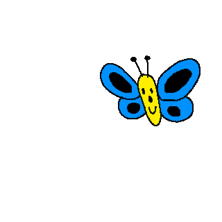
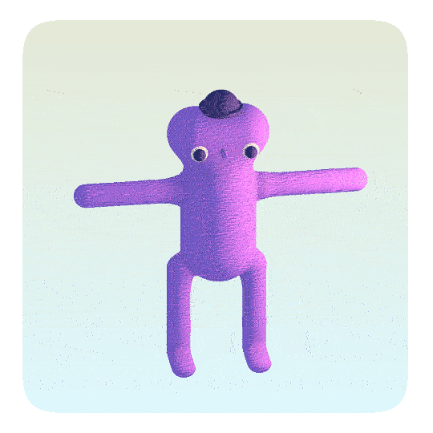
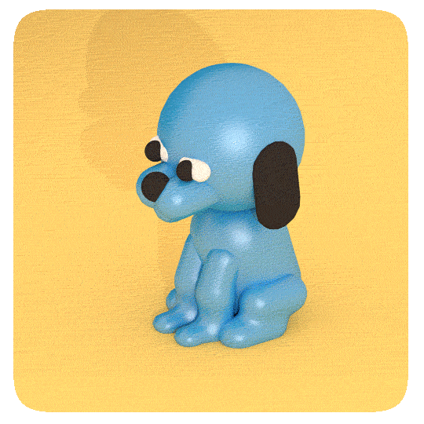
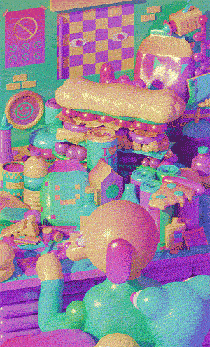
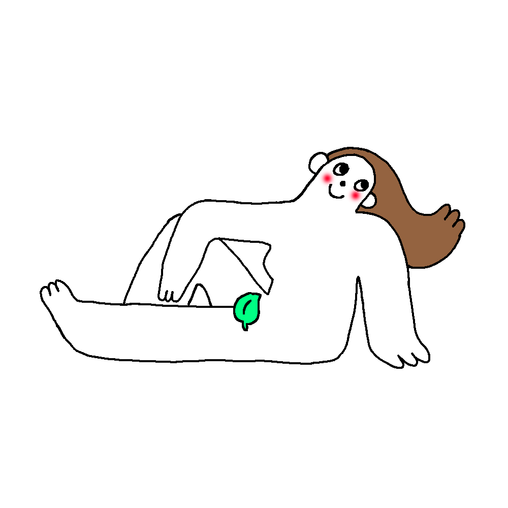

Daniela is just a fan. Sure she goes to Parsons School of Design, but she is not verified and only has 647 followers on Instagram.
Where did your art exist before Instagram?


"I guess right before Instagram it was tumblr and it was kind of the same thing. I think all of these platforms live and die on pretty short life cycles, and as I was having a big career on tumblr then it started to decline. Instagram emerged as the place for art to be. Before tumblr I guess I was in school just kinda doing my own stuff, but I would even say that I think Instagram is dying now and maybe I don't even know what the next thing is now. Maybe it’s Tik Tok.
I do actually think it’s Tik Tok or something else, but I don’t know what that means for me as a visual artist because i’m not doing dance videos or skits or things that fit on Tik Tok, but as a watcher of content that’s where I go all day. I don’t really go on Instagram...I go on Tik Tok.
I think a lot of it has to do with what tools people have like let’s say from 2013-2017 the internet was really well set up for people doing visual art because people were looking at their phones with their sound off, or people were kind of scrolling through instagram and not everyone had high speed internet, and now that technology has gotten better, video has really taken over. The tools for making animated videos really quickly haven’t really caught up so people doing self recorded videos are thriving right now and you wouldn’t really think that as eating the lunch of visual artists, but to the average person they don’t make those distinctions necessarily, like they just think of it as all entertainment content for their phone.
So yea basically I’m like a cranky illustrator who thinks their career is dying because of Tik Tok. Illustration is it’s own thing and as a community and an industry it has its own way of working but it has been really nice to also be like a social media presence as well as a working artist. Cause when I first got into illustration when I was in high school the idea that you would be an illustrator and that you would also be kinda famous and putting out pictures of your life and dog and stuff, that wasn’t really on the table for anyone."
Did posting your art online jumpstart your career?
"Yes definitely. I think it’s a combo thing. The way things really happen as an illustrator/commercial artist, an art director has to come find you or a producer and they could find you through the instagram explore page, a recommendation, or you cold emailing them, but i do think it's something that more of those power movers in the art world are looking at is like a follower account. But it’s hard for me to say truthfully if it’s actually made a difference. If I could go back and do the last 5 years again I don’t know if I would spend as much energy on instagram as I have. I think I would probably spend more on making one on one connections with people. A lot of the really early breaks I had in my career came from writing long fan emails to other artists and going to events and talking to people, and things that had nothing to do with social media."

Has Instagram influenced the art world for the better or for the worse?

"I guess to me it’s kind of neutral. I think one big change in the way people make art from like 10-20 years ago is that there’s more of a demand for people to make small fast art pieces…..a lot big artist who’ve become famous in the past could spend months on a piece and now the expectation is to be making stuff that is instantly accessible... So in some ways I think currently we are experiencing a lack of depth in the art that’s being put in front of us… but I’m not super cynical about it because i think it’s a cycle and that’s just where we are in it. "
Where do you think your art style fits into art history?
"I think there’s a growing movement of specifically 3D illustrators who are using these tools that are kind of new or pushing these …. expensive 3d modeling tools in more exciting and expressive directions … so yea I’m the king of that. "
Do you think there could ever be a point in time where your art can end up in an art museum?
"Yeah! You never know, but I’m a commercial artist and I’ve done stuff in fine art spaces before and I actually don’t think it’s that interesting…. I think it’s really cool to do stuff on Instagram and for people to see it that are outside of the usual audience and it gives me freedom to not be spending money on my art and to be so precious about it and to try out a bunch of things at the same time… but secretly everyone would love to be a nice museum, right? But I don’t know if that’s what I’m really doing…
"
" A couple years ago I decided that what I really wanted was to make someone’s favorite thing….and I thought well I’m doing all these commercials’ and these animated gifs and stuff and people don’t really have a favorite gif and they don’t really have a favorite piece of branded content… maybe some people do but not in the same way that they have a favorite book, or favorite album, or favorite video game… so not on a mass scale but just on like an intimate scale, that’s where I’ve been moving my process… is to working on stuff that can stick around in people’s lives and be resonate with them. "

